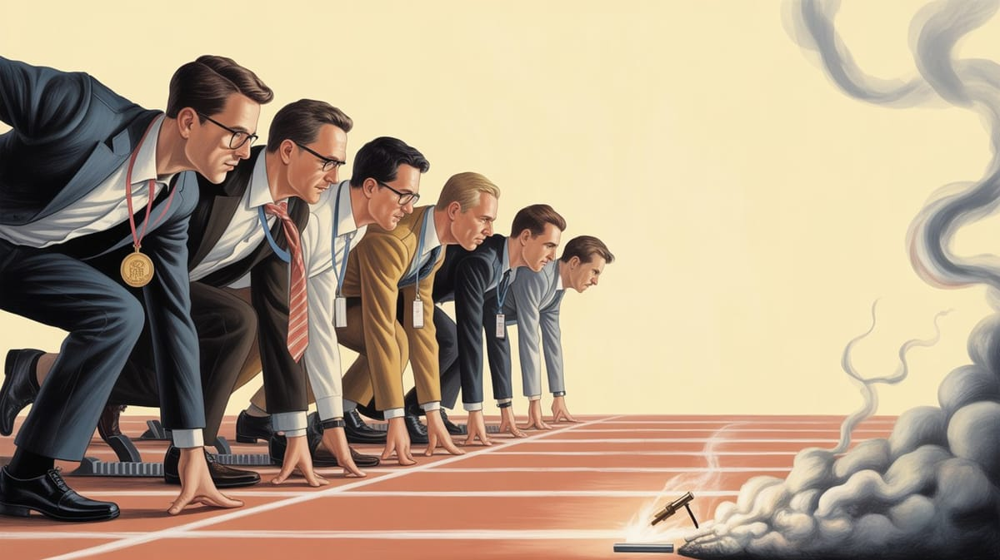

:: Now begins a story...
May I present to you, a finely curated section of a fine collection of the wonderful web we weave with a weekly roundup of bits and pieces from the far corners of the super information highway that I like to call — Token Wisdom ✨


"The supreme art of war is to subdue the enemy without fighting."
— Sun Tzu (The Art of War)

Editor's Notes 📆
Week 10 of 52 // March 1st 🧿 7th, 2026
This week's thread is infrastructure: the foundations we encrypt, embody, launch into orbit, and take for granted. Quantum computing compresses the timeline on cryptographic risk. MIT reveals that mastery lives in the eyes before it reaches the tongue. Michael Pollan argues that consciousness itself now requires active defense. Commercial data centers in the Gulf become military targets. Biometric systems in Africa exclude the people they were supposed to serve.
Meanwhile, prime numbers exhibit a repulsion pattern that has no business existing, and a Nobel laureate explains how porous metal cages might clean our air and water. The common thread: we build systems faster than we understand them, and understanding — tacit, embodied, hard-won — is the one thing that doesn't scale.
Where the future arrives before we understand the present... becomes a gift 🎁

🔮 Pearls of Wisdom, The Latest Edition...
Get smart, fast. If you're pressed for time and want to keep up to date!
Enjoy The Newest Latest, A Closer Look & Time Well Spent!

🎉 Newest / Latest
100% Authentic Humanly Chosen

The Infrastructure Audit: When Foundations Crack
This week's collection maps simultaneous stress tests across every layer of the infrastructure we depend on. Encryption timelines are shortening. Cognitive load is measurable and consequential. Physical data infrastructure is now a geopolitical target. The identity systems meant to serve the unserved are occasionally doing the opposite. And somewhere underneath all of it: a Swiss consensus, a clever hash function, and a handful of researchers who bothered to look at the gaze patterns of people learning things.
- Breaking Encryption With a Quantum Computer Just Got 10 Times Easier
RSA can now be cracked with only 100,000 qubits — a tenfold improvement on previous estimates. The technical challenges to building such a machine remain real, but the distance just shrank. If your systems rely on RSA and haven't started a post-quantum migration, the timeline you're ignoring is now shorter. Read more at New Scientist - Google Quantum-Proofs HTTPS by Squeezing 15kB Into 700 Bytes
Merkle Tree Certificate compression is already in Chrome. The engineering is genuinely elegant: post-quantum cryptographic signatures are large, so Google compressed them rather than waiting for the internet to accommodate them. This is what proactive infrastructure defense actually looks like. Read more at Ars Technica - How Some Skills Become Second Nature
MIT researchers showed that gaze patterns can reveal when a skill has become truly unconscious — before the person can articulate what they know. This isn't just interesting psychology. It's a measurement challenge for AI training, a diagnosis tool for workforce development, and a reminder that human expertise is not text. Read more at MIT News - When Using AI Leads to "Brain Fry"
Certain patterns of AI use drive cognitive fatigue; others reduce burnout. The distinction isn't AI vs. no AI — it's whether the human remains the cognitive agent or outsources that role entirely. Passive consumption of AI outputs appears to be metabolically expensive in ways that active collaboration is not. The implications for how organizations deploy these tools are not subtle. Read more at Harvard Business Review - 'Our Consciousness Is Under Siege': Michael Pollan on Chatbots, Social Media, and Mental Freedom
Pollan's new book argues for "consciousness hygiene" — deliberate practices to defend cognitive autonomy from AI and dopamine-driven platforms. Whether you find this compelling or alarmist, the underlying question is serious: if attention is the substrate of agency, and attention is being systematically optimized against, what exactly remains? Read more at The Guardian - Biometric IDs Are Being Rolled Out in Africa. Study Reveals the Risks and Pitfalls.
Digital identification is supposed to universalize identity. In practice, biometric failures — poor fingerprint reads, infrastructure gaps, algorithmic mismatches — can block access to essential services rather than provide it. The gap between the intended function of a system and its actual distribution of outcomes is not a bug. It's a design question that wasn't asked loudly enough. Read more at The Conversation - Switzerland Just Published the Quietest Quantum Strategy in Europe. It Might Be the Smartest.
While the US and China race toward national quantum champions with enormous capital concentration, Switzerland is betting on open collaboration and ecosystem depth. No big-spend moonshots. Deep institutional networks instead. This isn't timidity — it's a specific theory of where durable quantum advantage actually comes from. Read more at Post Quantum - Data Centres in Space: Less Crazy Than You Think
Tech leaders are exploring orbital data centers to bypass terrestrial constraints: land, water, energy, heat dissipation. Launch costs and satellite efficiency are the key variables. The case is more serious than it sounds — but so are the failure modes. Orbital infrastructure that goes dark takes considerably longer to reboot than a server farm in Virginia. Read more at The Economist - What If the Real Risk of AI Isn't Deepfakes — But Daily Whispers?
AI is transitioning from tools we use to prosthetics we wear. The risk isn't a single catastrophic deepfake — it's a billion micro-adjustments to how people frame problems, interpret evidence, and assess their own judgment. Influence at ambient scale doesn't look like influence. That's the point. Read more at VentureBeat - Academics Need to Wake Up on AI
Ten theses for the scholarly community that hasn't noticed the ground shifting. The argument isn't that AI will destroy academia — it's that academia is currently sleepwalking through the most significant transformation of knowledge production in centuries. Institutional inertia is not a neutral stance. It's a choice with consequences. Read more at Substack
👁️ A Closer Look
Unearthing gems in the digital landscape.

Because in the ever-evolving tech world, there's always more to learn and laugh about.
The Race That Eats Its Own Rules
A Pattern Recognition on the AI Model Wars
They knew. They said so. Then they shipped it anyway...
- 🎯 HOOK
A 2024 study in Nature Human Behaviour on institutional decision-making found that safety recommendations from internal experts are most likely to be overridden precisely when the stakes are highest — not because the recommendations are wrong, but because high stakes attract the financial and reputational infrastructure that makes overriding them rational. The Franck Report wasn't an anomaly. It was the template. - 🎣 LINE
This connects directly to what this essay is actually about — which isn't OpenAI, or hallucination rates, or Sam Altman's career arc. Those are the symptoms. The underlying mechanism is that every high-stakes technology race produces the same sequence: idealistic framing, competitive signal, framing collapse, safety subordinated to speed. The people who understand the risk most clearly either adapt or leave. The ones who leave found Safe Superintelligence. The ones who stay get described as maturing. - 🔱 SINKER
The asymmetry here is structural, not moral. The Franck Report scientists were more technically informed than the decision-makers who overruled them. It didn't matter. Better founders, better boards, better stated commitments to safety produce the same outcome inside the same structure — because the structure is what generates the outcome. There is no personnel solution to an institutional problem. The race was driving in 1945. It is driving now.
 🌶️ iamkhayyam
🌶️ iamkhayyam
"The race is driving. The people are passengers who believe they're steering."
— Token Wisdom on the mechanism that selected against caution in 1945, and is selecting against it again now


A Closer Look: Explorations in Technology
Weekly essay in the areas of blockchain, artificial intelligence, extended reality, quantum computing, and all the bits and pieces.

A Closer Look: Explorations in Technology
Weekly essay in the areas of blockchain, artificial intelligence, extended reality, quantum computing, and all the bits and pieces.


📺 Time Well Spent
Top Ten of the Time I Spend

The Physical and the Foundational
This week's selections pull back to the physical and mathematical substrate underneath the week's headlines. Prime numbers repel each other in patterns they have no mathematical reason to exhibit. A weaker AI can teach a stronger one — which matters enormously for alignment. The Moon may hold the fuel for the energy transition we're trying to build. And a Nobel laureate explains how porous metal cages might be the most important chemistry most people have never thought about.
- The Cloud Is a Battlefield, and You're Enlisted
On March 1st, 2026, Iranian drones struck three Amazon data centers in the Gulf. These were not military installations. They were commercial server buildings protecting ordinary workloads. The video documents what this means for every organization that treats "cloud" as a synonym for "safe." Physical infrastructure has physical vulnerabilities. The abstraction doesn't protect the hardware. Watch on YouTube - Prime Numbers Follow a Pattern That Was Never Supposed to Exist — And No One Can Explain Why
In 2016, two Stanford mathematicians ran a trivial computation and discovered that prime numbers actively avoid repeating their last digits in sequence. They repel themselves in ways that have no explanation in current number theory. This is not a small result. It suggests that the distribution of primes — the foundation of cryptography, of random number generation, of RSA — contains structure we haven't mapped. Watch on YouTube - The Dumbest AI Taught the Smartest AI. Here's How That Went.
Weak-to-strong generalization: whether a weaker AI can successfully supervise and teach a stronger one. This is directly relevant to superintelligence alignment — the question of whether human-level AI can meaningfully oversee superhuman AI. The answer from this video is conditional and uncomfortable. Worth understanding before the capability curves make it urgent. Watch on YouTube - Hazel Eyes: The Genetic Secret Hidden in Middle Eastern DNA
Only 5% of the global population has hazel eyes. In Lebanon, Syria, Turkey, and Iran, the frequency jumps to 15–20%. The genetics are genuinely unusual — hazel isn't a simple intermediate between blue and brown, and its distribution suggests a specific founder effect or selective pressure that hasn't been fully characterized. A reminder that human population genetics contains surprises that have nothing to do with AI. Watch on YouTube - Space Data Centers Are Dumb.
A rigorous counterargument to the orbital data center thesis. The video walks through the actual physics: launch costs, thermal management in vacuum, latency, maintenance windows, failure recovery. The conclusion isn't that space data centers are impossible — it's that the problems they solve are smaller than the problems they create, at least for another decade. Watch on YouTube - How Corning Invented a New Fiber-Optic Cable for AI and Landed a $6 Billion Meta Deal
Meta is giving Corning up to $6 billion for fiber-optic cable for AI data centers. This is the unglamorous story underneath every AI infrastructure claim: the physical layer, the glass, the photons. Corning is famous for making iPhone glass. They may end up being more important to AI's physical infrastructure than any chip company. Materials science underlies everything. Watch on YouTube - Minecraft Is Bigger Than the Universe, by the Way
Minecraft's procedurally generated world is larger than the observable universe by several orders of magnitude. This is a genuinely useful illustration of how procedural generation and seed-based randomness work — and a reminder that the limits of what a system can contain are set by its generative rules, not its storage. This has implications for thinking about AI-generated content spaces that most commentators miss. Watch on YouTube - Helium-3: The Future Energy Source on the Moon
Helium-3 is rare on Earth and abundant on the lunar surface. As a fusion fuel, it produces energy without radioactive waste or carbon emissions. The engineering and logistics challenges are enormous — mining the Moon and running a functioning fusion reactor are both independently unsolved problems — but the physics is clean. If both problems were solved, the energy math is compelling. Watch on YouTube - Ex-Top Tesla Engineer Raises $140 Million to Rewire the Electric Grid
Heron Power, backed by Andreessen Horowitz and Breakthrough Energy, is scaling solid-state transformers to move power from renewable sources to the grid more efficiently than conventional transformers allow. The grid is the infrastructure bottleneck for electrification, AI, and the energy transition simultaneously. Solving it isn't glamorous. It's foundational. Watch on YouTube - Nobel Prize Lecture: Omar Yaghi — Metal-Organic Frameworks, From Molecules to Society
Yaghi's Nobel lecture covers metal-organic frameworks (MOFs): porous crystalline materials that can capture carbon dioxide, harvest water from air, and store hydrogen for clean energy. Delivered December 8, 2025 at the Aula Magna, Stockholm. Most people in AI and tech have not heard of MOFs. They should. The material science underlying the energy and climate transition is not abstract. Watch on YouTube

✨Token Wisdom
Knowledge Transmuted
In this edition, we've traced the stress lines running through the infrastructure that civilization runs on. Encryption is more fragile than the certificate in your browser suggests. Cognition is more vulnerable to ambient optimization than most cognitive science has been willing to say. Physical infrastructure in the Gulf is less protected than any service level agreement implies. And the tacit knowledge that holds all of it together is being depleted faster than it can be rebuilt — by the same tools we're deploying to replace it.

🌈💫 The Less You Know
The More You Learn
Latest Technologies & Innovations:
- Post-Quantum Cryptography (PQC): Cryptographic algorithms designed to resist attacks from quantum computers, replacing RSA and elliptic-curve methods that quantum hardware will eventually break
- Merkle Tree Certificates: A compression technique allowing large post-quantum cryptographic signatures to fit within existing TLS handshake constraints; already deployed in Chrome
- Metal-Organic Frameworks (MOFs): Porous crystalline materials that can selectively capture gases, store hydrogen, and harvest water from air — central to Nobel laureate Omar Yaghi's work
- Solid-State Transformers: Power conversion hardware without the oil-filled cores of conventional transformers, enabling more efficient renewable energy integration into the grid
- Weak-to-Strong Generalization: The question of whether a less capable AI system can successfully supervise and train a more capable one — a key open problem in alignment research
- Biometric Identity Systems: Digital identification infrastructure using physiological characteristics (fingerprints, iris scans, facial geometry) to verify identity at scale
- Consciousness Hygiene: Michael Pollan's proposed framework of deliberate cognitive practices to defend attentional autonomy from algorithmic optimization
- Tacit Knowledge: Knowledge embedded in skilled performance that precedes and resists verbal articulation; studied via gaze pattern analysis at MIT this week
Most Important Topics:
- Quantum Cryptographic Timeline Compression: What it means for deployed infrastructure that RSA can now be cracked at 100,000 qubits rather than 1,000,000
- Commercial Infrastructure as Military Target: The normalization of attacks on non-military data centers as geopolitical instruments
- Cognitive Offloading and Fatigue: How patterns of AI use shape whether cognition is augmented or depleted
- Biometric Access Exclusion: When identity verification systems produce systematic access failures for the populations they were designed to serve
- The Primes' Repulsion Problem: The unresolved mathematical observation that primes avoid repeating their terminal digits in adjacent positions — and what it implies for number theory
- Orbital Data Center Physics: Why launch costs, thermal dissipation, and maintenance constraints make space data centers more difficult than the surface-level argument suggests
- AI Alignment via Weak-to-Strong Oversight: Whether human-level AI can meaningfully supervise superhuman AI — and what the current empirical evidence suggests
- Open Collaboration vs. National Champions in Quantum: Switzerland's deliberate bet that ecosystem depth beats concentrated capital in quantum development
Acronyms:
- RSA — Rivest–Shamir–Adleman: the dominant public-key cryptography algorithm, based on the difficulty of factoring large integers
- TLS — Transport Layer Security: the protocol underlying HTTPS that encrypts web traffic
- MOF — Metal-Organic Framework: porous crystalline material with applications in carbon capture, water harvesting, and energy storage
- PQC — Post-Quantum Cryptography: cryptographic standards resistant to quantum computing attacks
- HBR — Harvard Business Review
Technical Terms:
- Qubit: The basic unit of quantum information; a quantum computer's qubit can represent 0 and 1 simultaneously through superposition, enabling certain computations infeasible for classical hardware
- Merkle Tree: A hash tree data structure that allows efficient and secure verification of large datasets by chaining cryptographic hashes
- Tacit Knowledge: Expertise embedded in practiced performance that cannot be fully transmitted through instruction; distinguished from explicit knowledge that can be codified
- Weak-to-Strong Generalization: The empirical question of whether a weaker supervisory model can reliably elicit aligned behavior from a stronger model it cannot fully evaluate
- Precession of Primes: The informal name for the 2016 Stanford finding that consecutive primes avoid having the same last digit at rates significantly above chance — a structural regularity in prime distribution with no current theoretical explanation
Just because Jon Snow knows nothing, doesn’t mean you have to.
Embrace the pursuit of knowledge to shape a better tomorrow. Sign up for more Token Wisdom and carry the torch of foresight into the fathomless domains of innovation and beyond.
"Infrastructure is the thing you don't notice until it fails. The cryptographic infrastructure took thirty years to build and is now a quantum engineering problem. The cognitive infrastructure took a lifetime to build and is now an attention economics problem. The physical infrastructure took a decade to build and is now a geopolitical problem. These are not separate problems. They are the same problem at different layers of the same stack."
— Token Wisdom ✨
Until next time: stay smart, and kind, and definitely stay weird!
Become a Token Wisdom subscriber
Illuminate your inbox with the light of knowledge. ✨

Thank you for cruising by the Cult of Innovation
We’re making some Stone Soup here. If you enjoyed this amuse-bouche of news compilations in bite-sized morsels, please share it with your friends and help feed a community. Mmmm. #nomnom.

Don't forget to check out our 2025 Rollup the Rim to Win Token Wisdom =)
 🌶️ iamkhayyam
🌶️ iamkhayyam